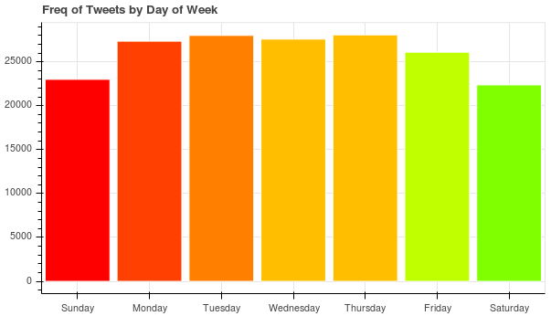

An analysis by Patrick Beekman
Twitter can be a wild and confusing place with a plethora of information readily available. Unfortunately twitter is constantly being flooded with noise, often times it is difficult for your tweets to stand out and gain traction. That is the inspiration for this analysis, I have studied the best times to tweet, best emotions and keywords that should be used to give your tweets the most traction. Something to note is that all this analysis has been done with my ~200 followers and 2,000 tweets for each of those users. Not all followers have 2,000 tweets so after all data collection and cleaning I collected about 250,000 tweets. This analysis is specific to my followers and how I can gear my tweets towards my followers to get the largest exposure. With this project anyone can download the project from github and do this analysis on their own followers. My analysis can still be generalized to see a general trend in tweets that anyone can follow to give their tweets exposure.
When to tweet is an important part of getting people to see your tweets. I created a bargraph of the amount of tweets during each day of the week (shown below) to see if there was an ideal day to tweet when there is more activity happening. Looking at the graph we can see that throughout the week it seems to be about the same amount of activity but it drops off during the weekend. There are about 4000-5000 less tweets on the weekends compared to weekdays this is about a 16% decrease in twitter activity on the weekends. So if you are looking to get more eyes on your tweets you may want to consider tweeting on a weekday.
Just knowing what day of the week to possibly tweet on is not enough to get your tweet seen. A more important indicator of tweet exposure is the amount of favorites and retweets you get on your tweets. The more retweets the further exposure you have with your tweets, the more favorites the more people enjoy your tweets and are likely to retweet or share with friends. The plot below looks at the number of favorites and retweets grouped by hour for any particular day. CREATE PLOT: unNormalized favs/RTS by hour broken up by day of week
As you can see by the plot above.
As you can see by the plot above.
As you can see by the plot above.
As you can see by the plot above.
As you can see by the plot above.
conclusion stuff
Patrick Beekman ~ Appalachian State University
Senior Computer Science